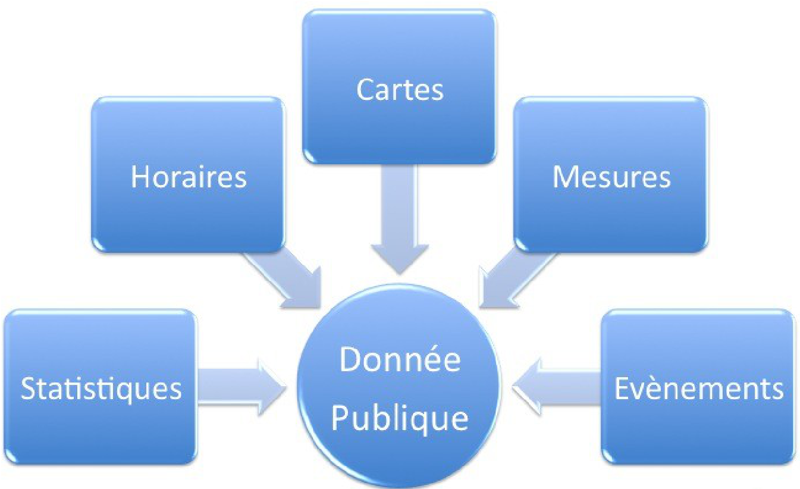
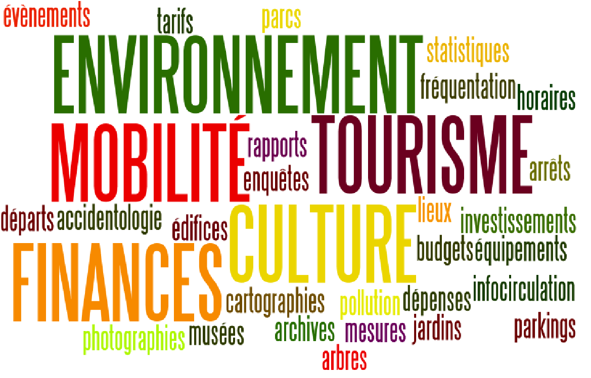
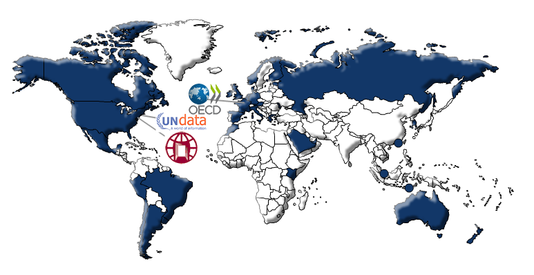
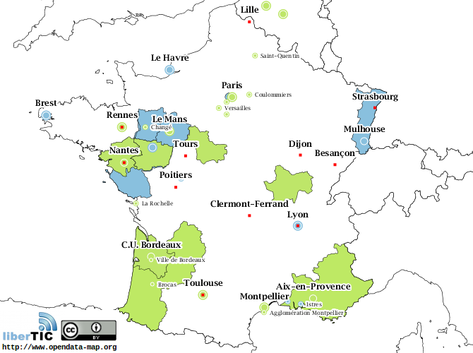
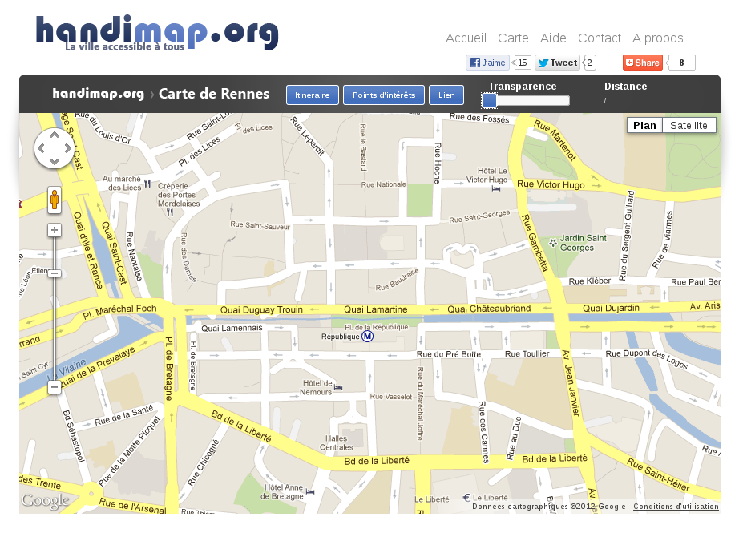
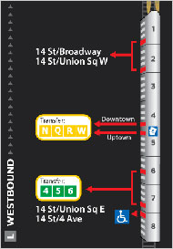
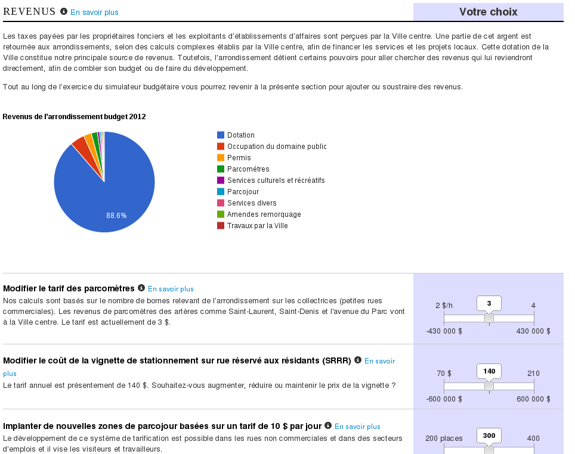
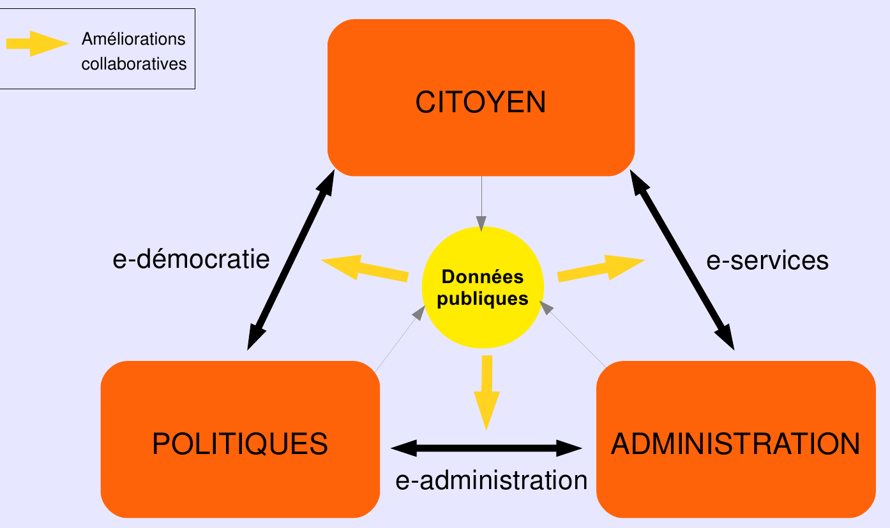

L'opendata dans tous ses états
PHP Tour Nantes 2012
Association de loi 1901
Promotion de l'ouverture des données
Veille & communication
Sensibilisation
Animation
L'opendata, c'est quoi ?
Définition
“A piece of content or data is open if anyone is free to use, reuse, and redistribute it — subject only, at most, to the requirement to attribute and/or share-alike.”http://opendefinition.org/
Les principes
Accessible
Exploitable
Réutilisable

Critère d'évaluation
Complète
Primaire
Opportune
Accessible
Exploitable
Réutilisable
Non discriminatoire
Non propriétaire
Libre de droit
permanent
Tarif
L'ouverture des données publiques
C'est quoi une donnée publique
Définition
Une donnée publique est une information produite ou reçue « dans le cadre de leur mission de service public, par l’État, les collectivités territoriales ainsi que par les autres personnes de droit public ou les personnes de droit privé chargées d’une telle mission.


Commision d'accès aux documents administratifs
La loi de 1978
Elle reconnaît à toute personne un droit d'accès et de réutilisation des informations publiques
Données rendues
- Accessibles et réutilisables
- A des fins commerciales ou non
- A des coûts qui n'excèdent pas leur coût de production
Les données exclues
Sécurité & Defense
Non nominative
Caractère privé
La propagation du mouvement
Carte mondiale
En France
Le privé aussi !

Pourquoi ouvrir ?
Transparence
plus transparence = plus de confiance
Participation
plus d'information = plus de compréhension = plus de participation
Collaboration
plus d'échanges = plus d'implications = plus d'améliorations
Innovation
Economique
Quelques exemples
Datapublica
Producteur de données
- Annuaire des données ouvertes
- Vends des jeux de données personnalisés
Handimap
Calcul d'itinéaire accessible
Exit strategy NYC
Calcul d'itinéaire du métro avec gestion des échanges
Fourmi Santé
Comparatif des prix de la santé
Budget plateau
Simulateur de budget d'un quartier de Montréal
Vers un gouvernement 2.0

Des questions ?
Use a spacebar or arrow keys to navigate